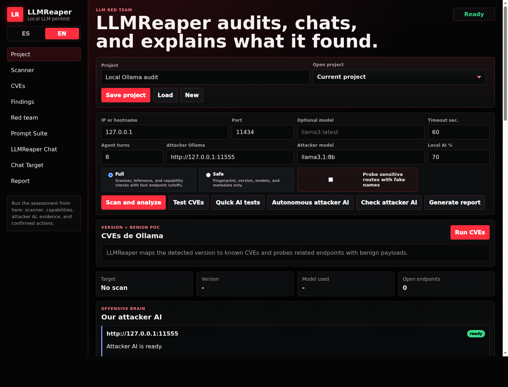

Todo el mundo está levantando modelos con Ollama —en la laptop, en un server
de la empresa, en un contenedor que "es solo para probar". El problema es que un montón de esos
:11434 terminan expuestos, sin auth, y nadie los está mirando con ojos de
atacante. Ahí es donde entra LLMReaper.
La idea central es simple: en vez de escribir yo los jailbreaks, pongo una IA a atacar a otra IA. LLMReaper tiene un "cerebro ofensivo" —una IA atacante— que genera prompts adversariales contra el modelo objetivo, prueba, lee la respuesta y ajusta. Vos definís el objetivo; la IA hace el trabajo de probar.

Qué hace
- Escanea el objetivo. Sondea los endpoints de Ollama
(
/api/tags,/api/show,/api/chat,/api/generate,/api/pull,/api/create…), detecta la versión y te dice qué quedó abierto. - Cruza CVEs. Mapea la versión detectada contra CVEs conocidos de Ollama y prueba los endpoints relacionados con payloads benignos (prueba de concepto, sin romper nada de más).
- Ataca con IA. El cerebro atacante lanza 60 sondas de prompt injection y jailbreaks contra el modelo, y puede correr en modo autónomo por varios turnos hasta encontrar una grieta.
- Te lo explica. Cada hallazgo viene con una explicación legible: qué se probó, qué respondió el modelo y por qué eso importa. No un volcado de JSON.
- Reporta. Genera el informe del assessment con las acciones confirmadas y la evidencia.
Safe y Full: vos elegís cuánto apretás
Metí dos modos a propósito. Safe se queda en fingerprint: versión, modelos, metadata; ideal para un primer recon sin tocar nada sensible. Full va con todo —inferencia, rutas de administración y chequeos de capacidad con cortes rápidos para no colgar el target. Y hay una opción útil: probar rutas sensibles con nombres falsos, para ver cómo reacciona el modelo sin operar sobre datos reales.
Local, sin build, en dos idiomas
Backend en Python puro (solo librería estándar, cero dependencias raras) y frontend en HTML/CSS/JS estático: no hay que compilar nada, lo abrís y funciona. La interfaz está en español e inglés. Quería que bajara la barrera de entrada al máximo: auditar tu propio Ollama no debería requerir montar medio stack.
Por qué lo construí
Después de integrar el AI Copilot en NexHunt, me quedó picando una pregunta que hoy casi nadie tiene resuelta: cómo se testea la seguridad de un LLM. Las apps de siempre las sabemos auditar; los modelos son territorio nuevo, y la superficie —prompt injection, jailbreaks, endpoints de administración expuestos— crece más rápido que las herramientas para revisarla.
LLMReaper es mi respuesta a esa pregunta, y el proyecto donde trabajo la intersección que más me interesa hoy: seguridad ofensiva + IA.